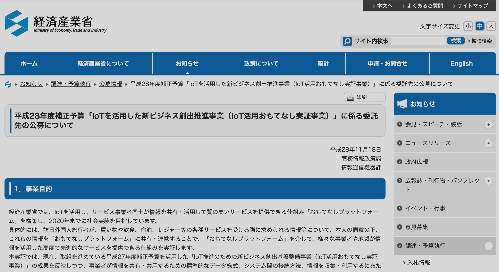

大学時代の友人が年始早々に東京を離れるということで、共通の友人三人でこじんまりとした送別会を一昨日に開催したのですが、非常に刺激的なひと時を過ごすことができました。全員で４人いたのですが、大学時代の部活仲間だったこともあり、文系、理系がちょうど半分の二人ずつだったためか、話が本当に多岐にわたり、普段使わない脳の部分が心地よく酷使された感じがします。大学時代には部活やサークルに励まず、大学生の本分である勉強をしっかりやるべきだという意見を最近は聞くことも多いのですが、このような体験をすると、部活やサークルに入るメリットは単に馬鹿騒ぎができて楽しいというよりも、将来にわたっていろいろな思考を疑似体験できる可能性が大きくなるということにあるのでは、と思います。もちろん大学生の時にそんなことは全く考えたことはありませんでしたが。。。
で話を元に戻すと、その中の一人が環境省で勤めている関係からその分野の話になり、私が会社を辞めてベンチャーを立ち上げたという話をすると、何なら政府の補助金を探してみてもいいのでは、というアドバイスをもらいました。中小企業向けにいろいろと補助金を出しているのでそれを使ってみるのも一考では、と言われたのですが、それまで私の頭の中では政府の中小企業向け補助金＝融資（つまり借金）という公式しかありませんでした。
帰ってきてからいろいろと調べたのですが、本当にいろいろありました。特に興味深かったのが、経産省が１１月１８日に公募を開始した「IoTを活用した新ビジネス創出推進事業（IoT活用おもてなし実証事業）」です。２０２０年の東京オリンピック・パラリンピックへ向けて日本政府として訪日外国人数の増加を図っていますが、その活動の一環として「おもてなしプラットフォーム」なるものを作ろうという構想があるようです。いきなりその大元となるプラットフォームを作るのは難しいので、地域ごとに「ローカルプラットフォーム」を作っていこうというのがこのプロジェクトの趣旨なのですが、その実証事業を１０件ほど採択予定とのことで、今回これに応募してみようかと思った次第です。
自省しておくと、私自身の会社は社員一人、カッコ自分というオチなので、いくらベンチャー起業の参加を認めていると言ってもかなり無謀だということはわかっているのですが、何事もチャレンジということでお許しください（汗）
提案資料の締め切りは１２/９（金）１８時ということで、これから提案書の作成に励みたいと思います。うまくいけば１２/２２（木）の経産省でのプレゼン会に潜りこめるのですが、また何か本件で進展あればレポートさせていただきます。
今回は経産省の件をご紹介しましたが、他にもいろいろな補助金が用意されているので、皆様も是非自社事業にマッチする領域でいろいろと模索されるといいのでは、と思います。